1HOME FULL
커버 → 메뉴 줄(모든 쪽 같은 자리) → 맨 위 사진(아이콘 없음) → 한 줄 메뉴 10칸 → 프로필 카드 · TODAY · 시계 · 달력. 오른쪽 칸 = 오너가 직접 맞춘 너비(0.2766).
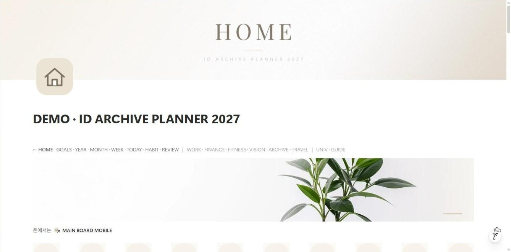
2026-10-06 디자인 패스. 🎬 DEMO 에만 반영 · 🛒 판매본 그대로. 판단할 것: 예쁜가 · 정돈됐나 · 쓰기 쉬운가 · 팔 만한가 · 페이지마다 목적이 보이는가. 고칠 점은 노션 「2️⃣ 노션 템플릿 자동화」에.
R6 = 되돌리기 기준점 · R6.1 = 이전 피드백 판 · R6.2 = 지금 개발 기준. 아래 1–17 은 실제 노션 화면이에요. 오너가 지금 고를 것은 WIDGET SELECTION 하나뿐이에요.
커버 → 메뉴 줄(모든 쪽 같은 자리) → 맨 위 사진(아이콘 없음) → 한 줄 메뉴 10칸 → 프로필 카드 · TODAY · 시계 · 달력. 오른쪽 칸 = 오너가 직접 맞춘 너비(0.2766).

노션 칸 사이(46px)는 바꿀 수 없어서, 그림 안 빈 테두리를 없애 아치가 칸을 꽉 채우게 했어요(메뉴 그림 v4 · 3:4 그대로 · 테마 · 나만의 색 그대로). 1줄 10칸 유지, 2줄로 돌아가지 않아요.
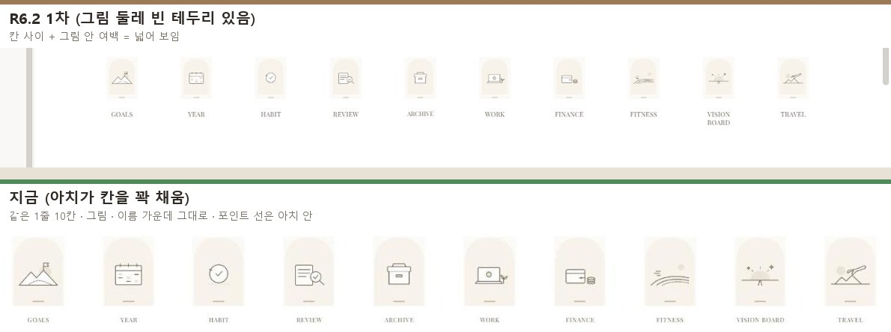
그림 가운데 = 이름 가운데 = 칸 가운데. 글자 사이 간격만큼 왼쪽을 채워 눈으로 보는 가운데. 긴 이름(VISION BOARD)도 칸을 넘지 않아요(좁으면 두 줄 · 글자만 작게).
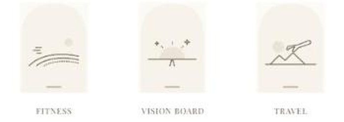
그림 + 이름이 카드 하나(노션 콜아웃). 캐릭터는 조금 작게(118 → 90). HOME 기본 = ARCHIE · 쪽마다 같은 카드에 맞는 모습(GOALS 목표 · HABIT 체크 · WORK 일 · FINANCE 돈 · FITNESS 운동 · VISION 꿈 · ARCHIVE 책 · TRAVEL 여행 · UNIV 공부 …). FITNESS · VISION 에도 같은 카드를 새로 넣었어요. 사진 ⋯ → 바꾸기 → 내 사진(테마를 바꿔도 그대로) · 설명 「기본」 → 지금 테마의 기본 그림.
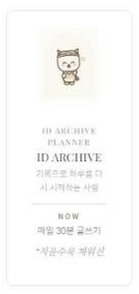
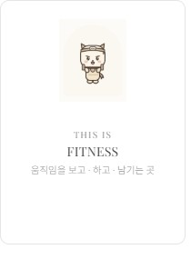
페이지를 옮겨 다녀도 메뉴 줄이 같은 자리에 있어요. 메뉴 데이터베이스 안 10쪽은 노션이 제목 밑에 「세부 정보 보기」 줄(40px)을 그려서, 나머지 10쪽(HOME 포함)에는 같은 높이의 빈 줄을 하나 두었어요 — 1526 · 넓은 창 모두 메뉴 줄 y 같음(실측). 문장 · 높이 40 · 글자 16 · 순서 같음, 지금 쪽만 굵게.
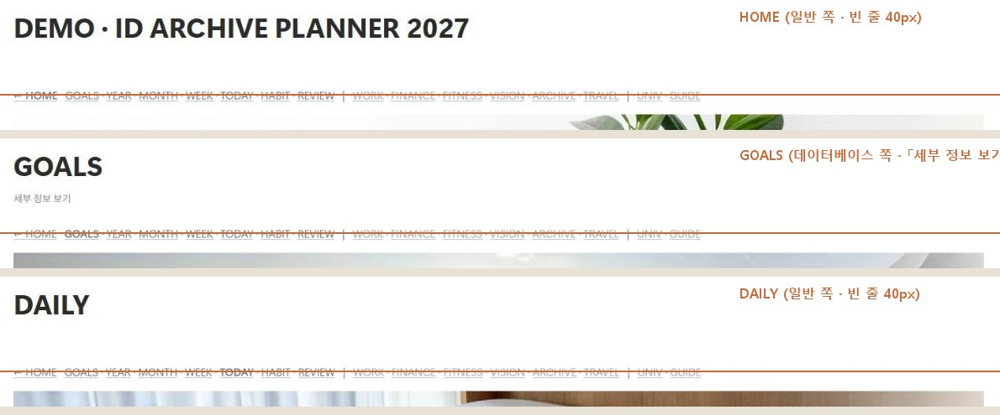
왼쪽 메뉴 「STEP 5 · YEARLY PLAN」(가는 곳 · 목표 연결 그대로). 5 STEP 카드는 글자 넘침 0.
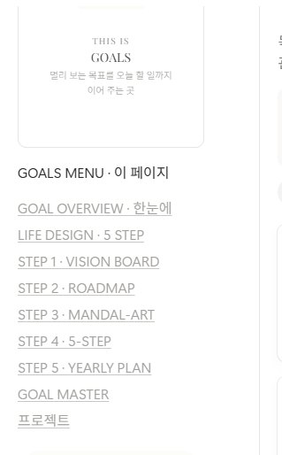
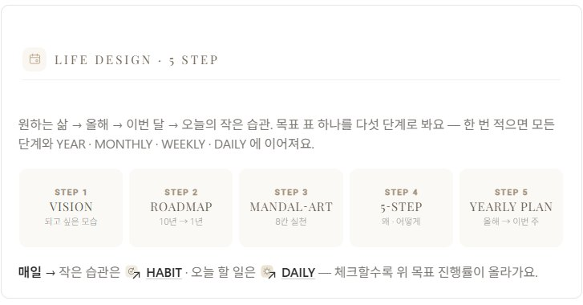
네 가지는 서로 따로예요: 커버(테마가 관리 · 내 커버는 테마를 바꿔도 그대로 · 되돌리기 = 지금 테마 기본) · 메뉴 줄 · 맨 위 사진(그림만) · 프로필 카드.
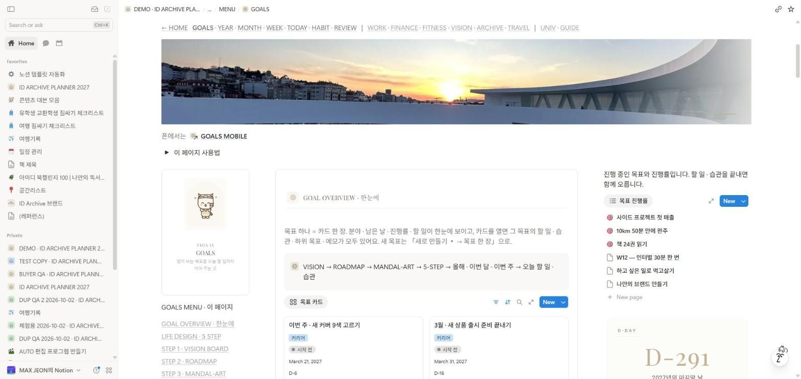
아무 위젯 ⚙ → 맨 위 GLOBAL THEME → 색(또는 나만의 색 HEX) → 「플래너 전체에 적용」 — Theme Studio 와 같은 설정 하나(같은 서버 · 같은 테마 상태). 지금 오너가 바로 눌러 볼 곳은 「DEMO THEME TEST · R6.2b (테마 시험용)」(BUYER QA 아래 · 오늘 DEMO 를 그대로 새로 복제 · 이 사본의 위젯 ⚙ 이 테마 서버에 연결됨). DEMO 자체는 테마 서버가 판매본 · DEMO 를 바꾸지 못하게 잠가 둔 상태예요 — DEMO 잠금을 푸는 일은 보안 설정이라 Claude 가 혼자 바꾸지 않았어요. 오너가 「DEMO 잠금 풀어」라고 허락하면 바로 풀고, DEMO 위젯 ⚙ → 「노션과 연결하기」에서 DEMO 를 한 번 허용하면 DEMO 에서도 같은 버튼으로 바뀌어요(테마를 바꿔도 견본 날짜가 그대로 남도록 DEMO 위젯 28개는 미리 고쳐 둠).
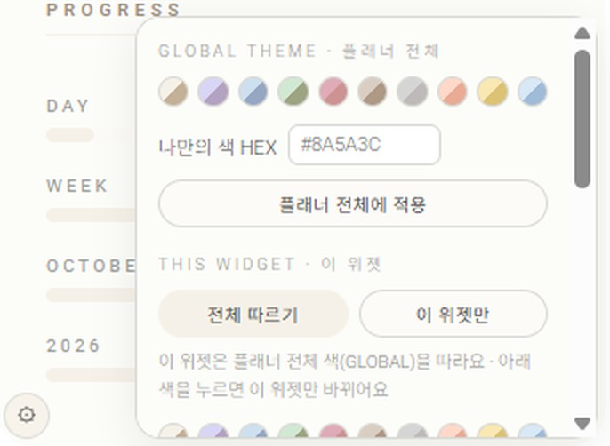
새 사본에서 실제로 차례대로 적용(BLUE 753 · LAVENDER 755 · IVORY 블록). 1526 화면 블록 상자(위치 · 크기) 첫 화면 35 · 대시보드 75 비교 — BLUE 0 · LAVENDER 0 · IVORY RESET 0. 바뀌는 것 = 커버 · 아이콘 · 맨 위 사진 바탕 · 메뉴 그림 · ARCHIE 액자 · 위젯 색. 메뉴 · 제목 · 테두리 · 제목 자리 · 배치 · 간격은 그대로.
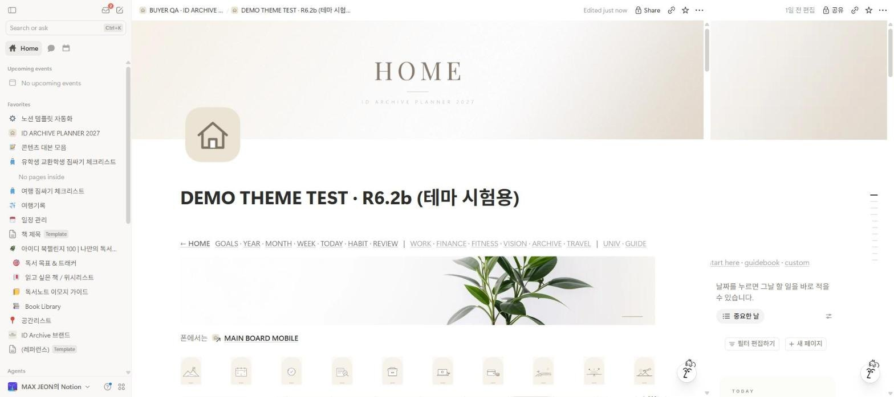
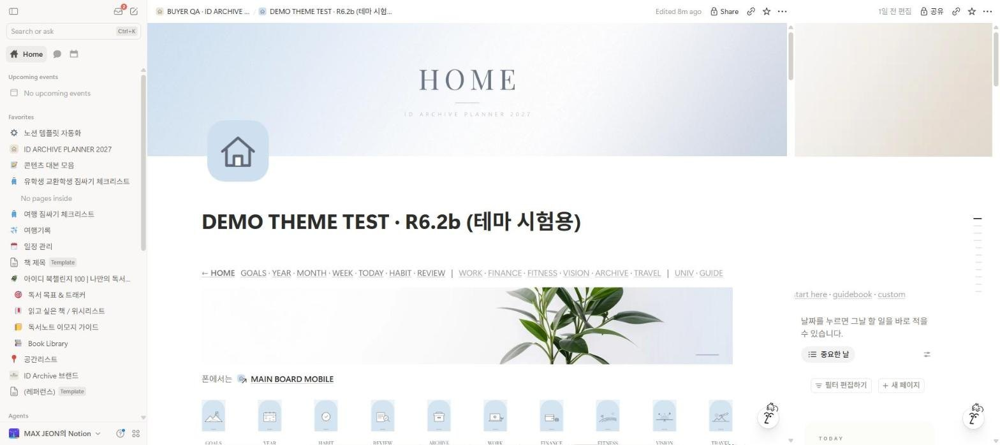
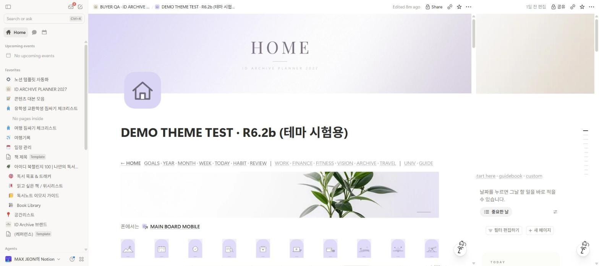
HOME 대시보드 아래 후보 그대로(정하지 않음). 노션에서 위젯 위 번호 H01–H32 · 아래 WIDGET SELECTION 에서 실제 위젯을 보며 고르기.
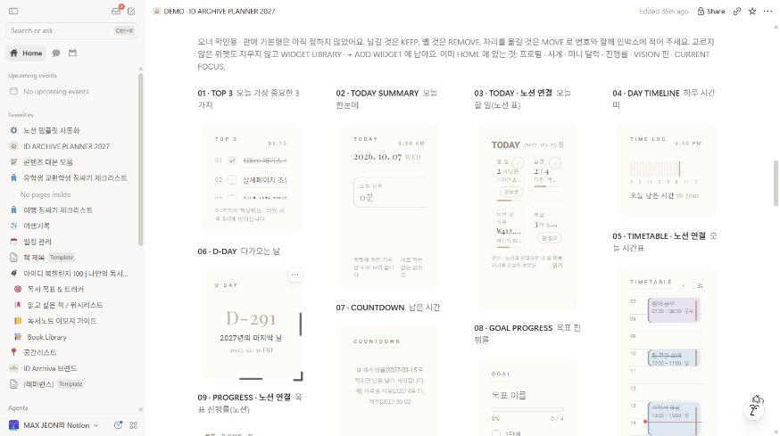
쪽마다 맨 아래 후보(번호 G01 · Y01 · D01 …). 예전 보고의 「107」은 제 셈 실수 — 쪽마다 실제 수와 제목 숫자가 같고 합은 106.
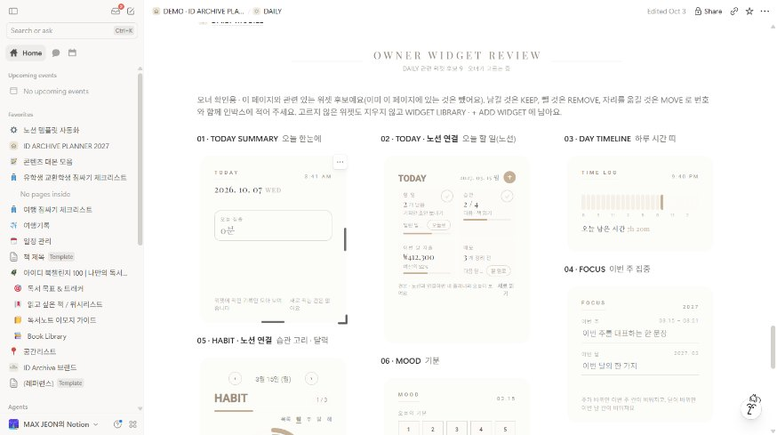
그대로. 위젯 이름을 한 번 누르면 그 페이지 맨 아래 「MY WIDGETS」에 들어와요. 오너가 직접 눌러 보기 좋게 HOME · 18쪽에 있어요. 가이드북 HOW TO 에 더하기 · 옮기기 · 빼기 · 다시 더하기.
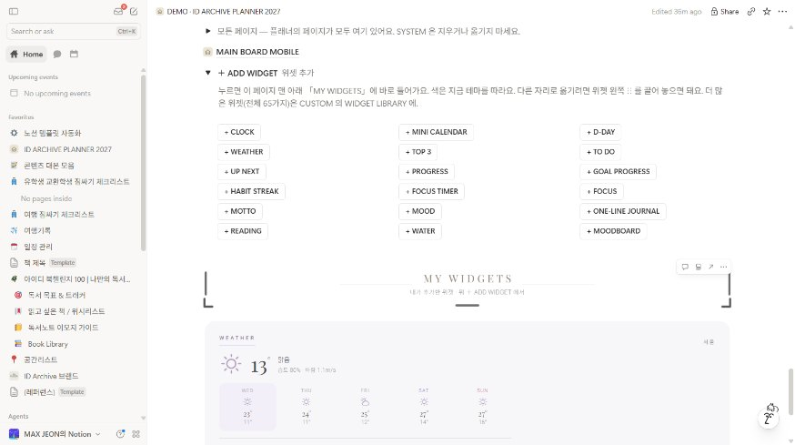
가이드북 「HOW TO · 하나씩 바꾸는 법」: 빠르게 적기 버튼이 하는 일(+ 메모 → 메모 목록 · + 일정 → 오늘 날짜 일정 · + 독서 → 읽는 중) · 저장되는 곳 · 새 버튼 더하기(복제 → ⚙ 버튼 편집) · 고치기 · 숨기기 · 빼기 · 옮기기 · 폰.
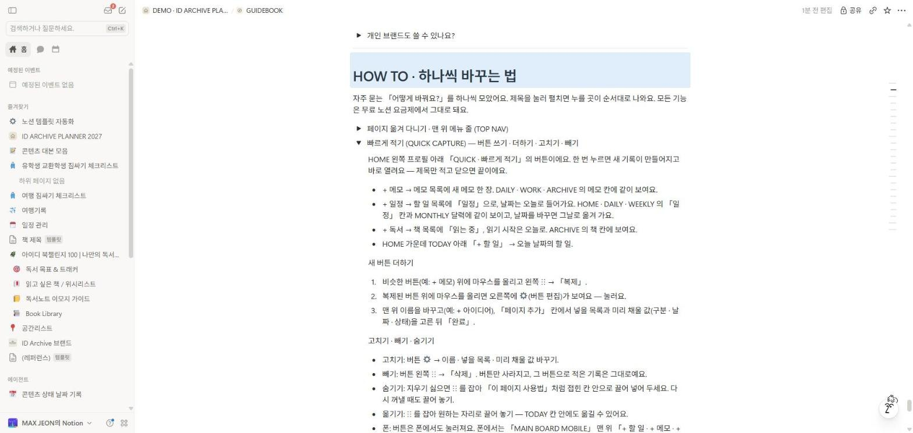
아이폰 화면으로 띄워 실측(2026-10-08): HOME 375 · 390 · 430, GOALS 390, HABIT 390, DAILY 390, FITNESS 390, VISION 375 — 페이지 옆 넘침 0(넓은 표 보기 안의 가로 스크롤은 노션 기본). 메뉴 줄은 네 줄로 접혀 모두 눌러져요. 폰에서는 노션이 제목 위 줄(백링크 · 세부 정보)을 쪽마다 다르게 그려 메뉴 줄 위치는 PC 만큼 같지 않아요.
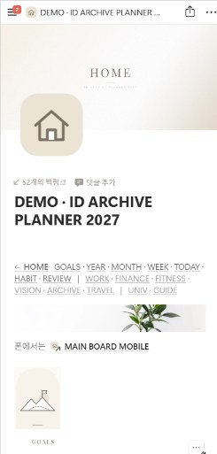
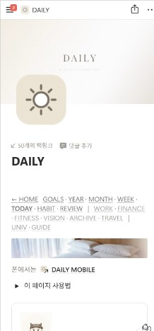
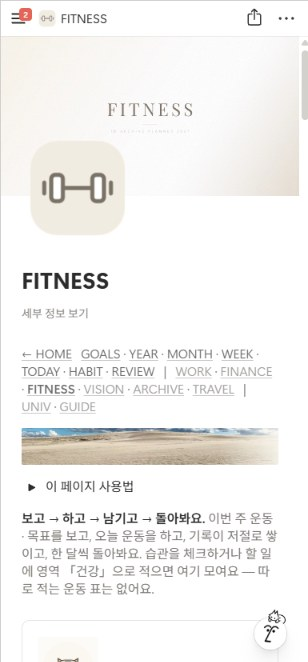
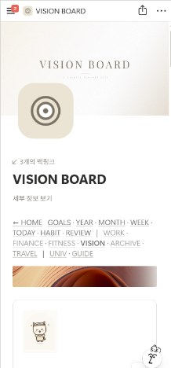
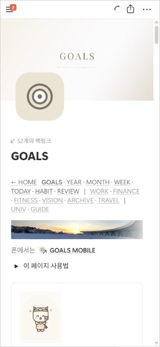
HOME 32 · 18쪽 106 = 138개 후보(노션에서도 위젯 위에 같은 번호). 카드마다 KEEP / REMOVE / MOVE 를 누르면 맨 아래 「내 선택」에 「H01 KEEP」처럼 모여요 → 복사해서 노션 인박스에 붙여 주세요. 안 누른 것은 그대로 후보로 남아요. 고른 것은 이 브라우저에만 저장돼요.
R6.1 구조는 그대로 두고 간격 · 정렬 · 메뉴 줄 · 프로필 카드 · 맨 위 사진 · GOALS 카드 · 가이드북을 다듬었어요. 아래는 실제 노션 화면(사이드바 열림 · 1526 × 854). 고칠 점은 노션 인박스에.
커버 → 메뉴 줄(HOME 도 다른 쪽과 같은 자리 · 같은 문장) → 맨 위 사진(아이콘 · 오른쪽 판 없이 사진만) → 한 줄 메뉴 10칸.
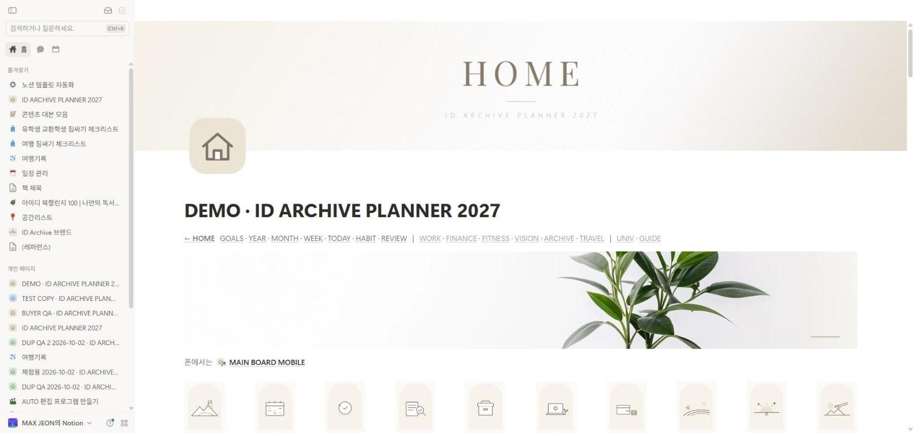
순서대로: ① 칸 사이 — 노션 칸 간격 46px 는 바꿀 수 없어서, 그림 둘레 빈 테두리를 줄여 그림이 칸을 더 채우게(같은 칸 폭에서 그림이 커져 간격이 좁아 보임) ② 이름표 — 한 줄 · 칸 폭에 맞춰 글자만 줄임 ③ 여백 — 이름표 위아래 여백 줄임. 그림 가운데 = 이름 가운데 = 칸 가운데. 두 줄로 돌아가지 않아요.
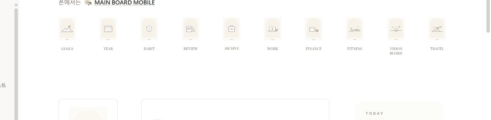
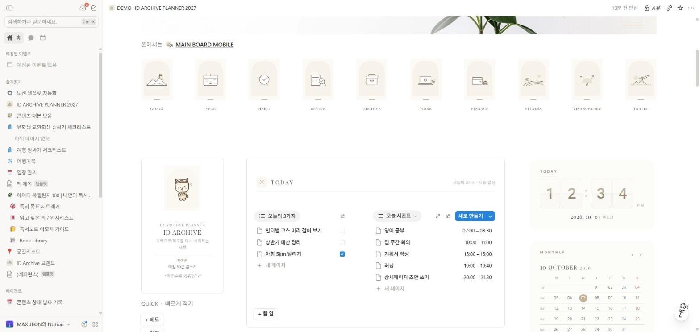
이름표는 그림과 같은 칸 안 위젯이라 칸 가운데에 놓여요. 글자 사이 간격 끝을 빼고 맞춰(눈으로 보는 가운데) VISION BOARD 처럼 긴 이름도 칸을 넘지 않게 두 줄 · 같은 크기.
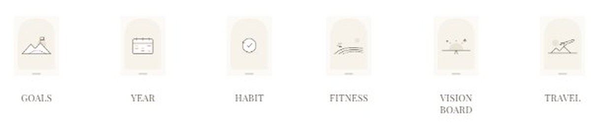
그림 블록 + 이름 위젯을 카드 하나(노션 콜아웃)로: 작은 ARCHIE · 이름 · 한 줄 · NOW. 작은 말(ID ARCHIVE PLANNER · THIS IS)은 이름 위 눈썹으로. 사진 ⋯ → 바꾸기 → 내 사진 · 설명 「기본」 → 지금 테마의 ARCHIE 그대로.
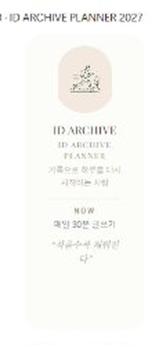
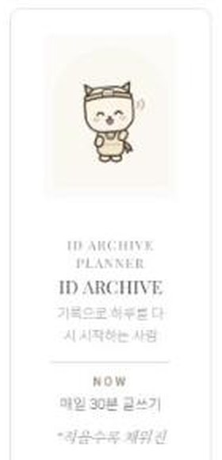
모든 쪽 같은 순서 · 같은 메뉴 줄(← HOME GOALS · YEAR · MONTH · WEEK · TODAY · HABIT · REVIEW | WORK · FINANCE · FITNESS · VISION · ARCHIVE · TRAVEL | UNIV · GUIDE, 지금 쪽만 굵게, 둘째 · 셋째 묶음은 연한 글씨). 아래 표는 1526 실측(페이지 맨 위에서 px).
| 페이지 | 커버 높이 | 메뉴 줄 y · 높이 | 맨 위 사진 y | 메모 |
|---|---|---|---|---|
| HOME | 256 | 420 · 40 | 460 | 일반 쪽 · 메뉴 줄 새로 |
| MONTHLY · WEEKLY · DAILY | 256 | 420 · 40 | 460 | 일반 쪽 |
| UNIV · BRAND · REVIEW · CAREER · SPACE | 256 | 420 · 40 | 460 | 일반 쪽(UNIV · BRAND 실측) |
| GOALS · YEAR · HABIT · WORK · FINANCE | 256 | 460 · 40 | 500 | 메뉴 데이터베이스 쪽 — 노션 「View details」 줄 40px(지울 수 없음) · 댓글 줄은 숨김(520 → 460, YEAR 실측) |
| FITNESS · VISION · ARCHIVE · TRAVEL · CONTENT | 256 | 460 · 40 | 500 | 같은 데이터베이스 · 같은 설정 |
모든 쪽: 제목 y 356 · 메뉴 줄 높이 40 · 글자 16px · 메뉴 줄 → 맨 위 사진 40px 같음. 다른 것은 위 두 줄 차이 40px 하나 — 노션이 데이터베이스 안 페이지에만 그리는 「View details」 줄(노션이 지우기를 거절). 없애려면 12쪽을 메뉴 데이터베이스 밖으로 옮기는 구조 변경 → 👤 오너 판단.
회색 글 카드 5개(칸마다 글자가 넘치던 것) → 한 줄 위젯 하나: 칸 폭을 똑같이 나누고 글자는 칸에 맞춰(가장 작아도 9px) 넘침 0. 왼쪽 메뉴 「STEP 5 · YEARLY PLAN」(가는 곳 그대로).
다섯 쪽 모두 같은 틀: 커버 → 메뉴 줄 → 맨 위 사진(아이콘 없음 · MONTHLY 는 새로 넣음) → 폰 안내 · 사용법 → 본문. MONTHLY · HABIT · WORK 는 왼쪽 위 같은 프로필 카드(HABIT 응원 · WORK 일하는 ARCHIE) · 오른쪽 칸은 HOME 과 같은 너비(0.2766). FITNESS · VISION 은 왼쪽 칸 없는 R5/R6 배치 그대로(카드 없음 · 오른쪽 · 사진 보드 그대로). 구조 검사: 20쪽 메뉴 줄 문장 같음 · 맨 위 사진 v3 · 커버 테마(MONTHLY 는 사용자 커버 그대로). 넓은 화면 캡처는 노션 탭이 숨김 상태라 이번엔 GOALS · HOME · 폰만 찍음.
DEMO 와 판매본은 테마 서버가 바꾸지 못하게 막혀 있고(실수 방지), DEMO 연결 허락은 오너 몫이라 — DEMO 를 그대로 복제한 「DEMO THEME TEST · R6.2 (테마 시험용)」(BUYER QA 아래)을 BUYER QA 연결의 플래너로 골라 두었어요. 그 사본 아무 위젯 ⚙ → GLOBAL THEME → 색 → 「플래너 전체에 적용」. 이 브라우저에서 처음이면 「노션과 연결하기」가 나와요 — 노션 화면에서 BUYER QA 만 허용해 주세요(DEMO · 판매본은 체크하지 않기). Theme Studio 와 같은 설정 하나라 어디서 바꾸든 같아요.
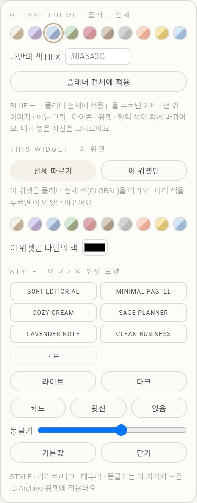
테마 사본에 실제 적용(블록 748 · 페이지 49). 1526 블록 상자 첫 화면 33 · 대시보드 79 — 차이 0. 커버 · 아이콘 · 맨 위 사진 · 메뉴 그림 · ARCHIE · 위젯 색만 바뀜.
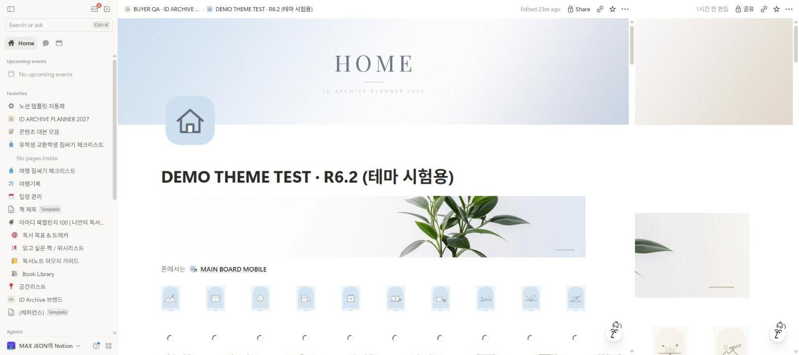
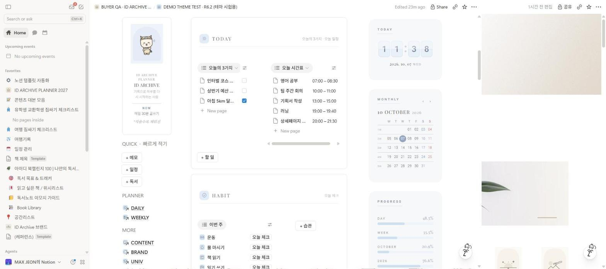
IVORY 를 다시 적용(블록 751 · 페이지 50) → 처음 IVORY 와 블록 상자 첫 화면 33 · 대시보드 79 차이 0. 커버 · 맨 위 사진 · 메뉴 그림 · ARCHIE · 위젯이 처음 IVORY 그대로. (사진의 사본 HOME 은 메뉴 줄을 넣기 전 복제 — 그 뒤 사본에도 같은 메뉴 줄을 넣었고, 사본 16쪽 × 링크 16개 모두 사본 안으로 · 원본으로 가는 링크 0)
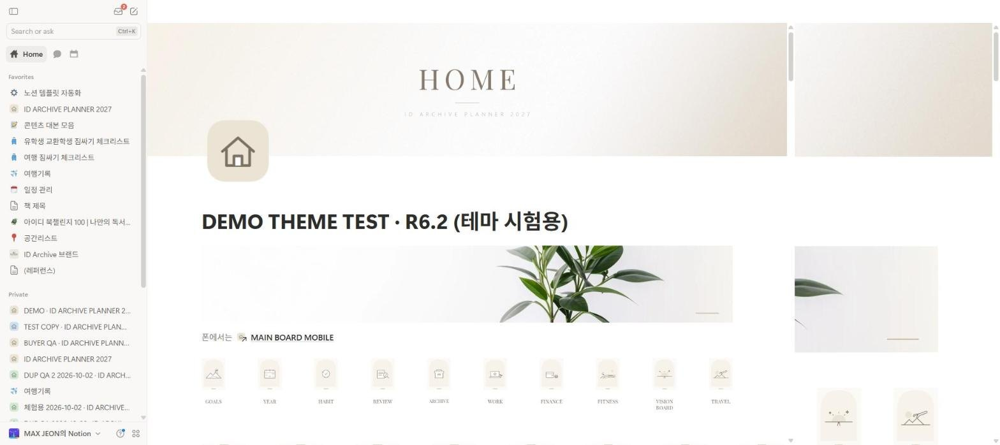
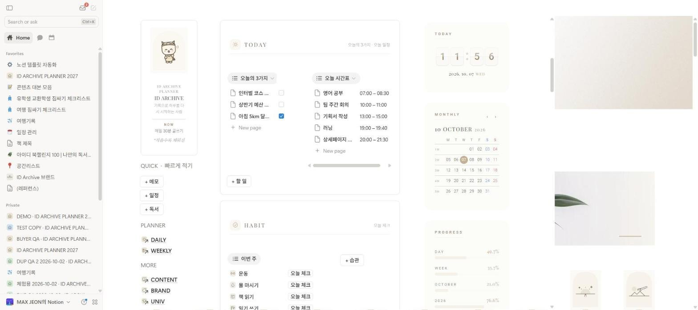
아이폰 화면으로 띄워 실측: HOME 375 · 390, GOALS 390, HABIT 390 — 페이지 옆 넘침 0(넓은 표 보기 안의 가로 스크롤은 노션 기본). 메뉴 줄은 네 줄로 접혀 모두 눌러져요. 폰에서는 데이터베이스 쪽의 댓글 줄도 숨겨짐.
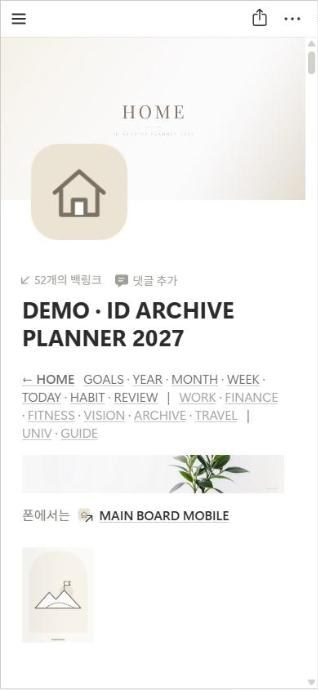
가이드북 TIP 앞에 새 절 하나, 펼치는 칸 12개: 메뉴 줄 · 빠르게 적기(버튼이 하는 일 · 저장되는 곳 · 새 버튼 더하기 · 고치기 · 빼기 · 숨기기 · 옮기기 · 폰) · 메뉴 사진 · 프로필 · 커버 · 맨 위 사진 · 전체 테마 · 위젯 테마 · 나만의 색 · 위젯 더하기 / 옮기기 / 빼기 / 다시 더하기 · 어울리는 위젯 · 폰 메뉴. 있는 기능만, 누를 곳 순서대로. 겹치던 예전 TIP 4칸은 이 절로 옮김(휴지통 · 되살릴 수 있음). 페이지 설명 16곳 「THIS PAGE」 → 「○○ MENU · 이 페이지」, GOALS STEP 5 이름도 맞춤.
오너 피드백(한 줄 메뉴 · 커버 다시 · 커버 / 맨 위 이미지 / 프로필 분리 · 위젯에서 전체 테마 · 위젯 후보 · ＋ ADD WIDGET · 마스코트)을 🎬 DEMO 에만 반영했어요. 아래는 실제 노션 화면(사이드바 열림). KEEP / REMOVE / MOVE 는 노션 인박스에 번호로 적어 주세요.
커버(테마 관리 · HOME) → 아이콘 · 제목 → 맨 위 사진 띠(따로) → 한 줄 메뉴 10칸. 메뉴 높이 520 → 204px. 커버를 다시 넣어 제목이 80px 내려갔지만 TODAY 는 1119 → 883(첫 화면 854 바로 아래 29px).
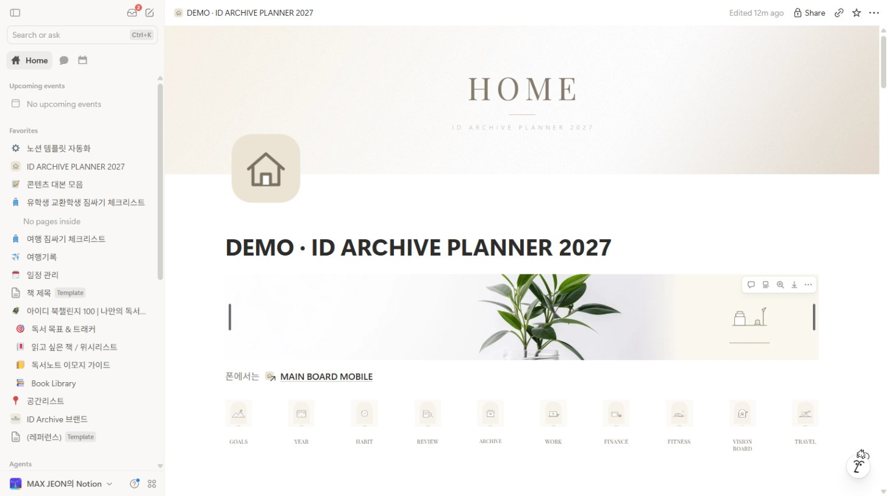
노션 칸 사이는 46px 로 고정이라 10칸 한 줄의 그림 크기는 화면 폭이 정해요. 두 줄로 넘어가지 않고, 칸이 좁으면 이름표 글자만 칸에 맞게 줄어요(잘림 0). 한 줄용 그림은 아치만 남긴 정사각 그림(테마 · 나만의 색 그대로).
| 폭 | 그림 | 메뉴 (위–아래) | TODAY 시작 / 화면 높이 | 세 칸 L · C · R |
|---|---|---|---|---|
| 1280 | 22px | 571–749 | 761 / 650 | 127 · 407 · 164 |
| 1440 | 38px | 627–822 | 834 / 760 | 156 · 500 · 202 |
| 1526 | 46px | 668–871 | 883 / 854 | 172 · 551 · 222 |
| 1728 | 66px | 721–945 | 957 / 940 | 208 · 668 · 269 |
| 1920 | 86px | 748–993 | 1005 / 960 | 243 · 780 · 314 |
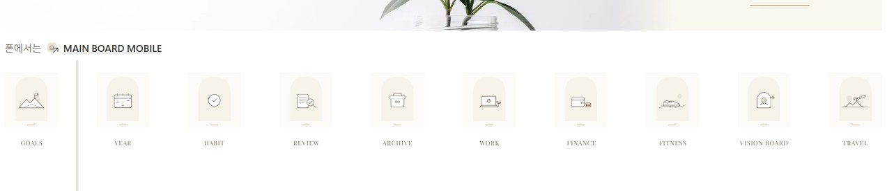
👤 오너 판단: 1280(사이드바 열림)에서는 그림이 22px 로 아주 작아요 — 노션 칸 간격 때문이라 한 줄을 지키면 피할 수 없어요(사이드바를 접으면 1526 수준).
오른쪽 칸 0.227 → 0.235(가운데 그대로 · 왼쪽에서 조금 가져옴 → 1280 잘림이 더 나빠지지 않음). VISION 사진 조금 크게(상자 410 → 450 · 사진 사이 간격 14/12 → 12/10). CURRENT GOAL ↔ CURRENT FOCUS 사이는 노션 칸 간격 46px 고정 — 양옆 사이드바 간격과 같은 값이라 비율로는 줄일 수 없어요(👤 줄이려면 두 카드를 한 카드로 합치는 구조 변경).
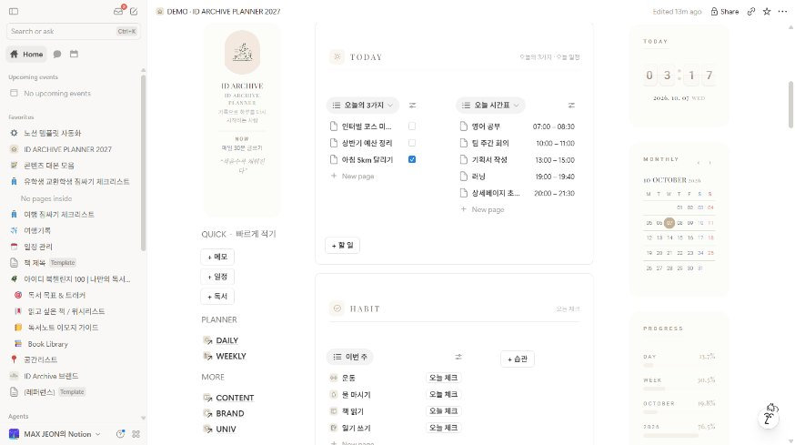
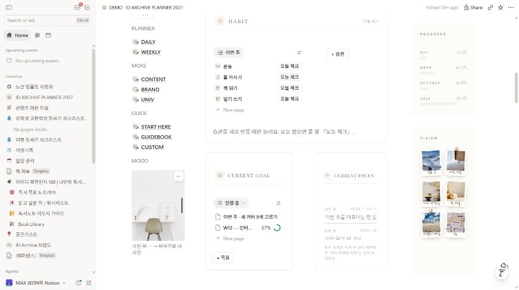
페이지 커버 = 테마 관리(아이보리 · 파랑 … · 나만의 색 HEX 는 서버가 그 색 그대로 그림), 내 커버는 테마를 바꿔도 그대로, 「페이지 커버 모두 기본으로」로 되돌리기. 맨 위 사진 띠 = 그대로 유지(내 사진 그대로 · 설명 「기본」 → 그 페이지 기본). HOME 프로필 = ID Archive 캐릭터 ARCHIE(노션 그림 블록이라 ⋯ → 바꾸기 → 내 사진 · 모든 기기 같음 · 「기본」 → 지금 테마의 ARCHIE). 셋은 서로 다른 그림이라 하나를 바꿔도 나머지는 그대로예요. MONTHLY 는 직접 올린 커버가 있어 그대로 둠(USER OWNED).
모든 ID Archive 위젯의 ⚙ 맨 위: GLOBAL THEME(10색 · 나만의 색 HEX → 「플래너 전체에 적용」 = Theme Studio 와 같은 적용 — 커버 · 맨 위 이미지 · 메뉴 그림 · 아이콘 · 위젯 · 달력 색이 함께). 그 아래 THIS WIDGET(전체 따르기 · 이 위젯만 · 전체로 되돌리기). 노션과 연결되지 않은 플래너는 그렇다고 그대로 알려 줘요.
정본 목록(일반 56 · 연결 9)에서 HOME 과 관련 있는 것만 실제로 놓았어요. 새 위젯은 만들지 않았어요. 이미 HOME 에 있는 것(프로필 · 시계 · 미니 달력 · 진행률 · VISION · FOCUS)은 뺐어요. 번호로 KEEP / REMOVE / MOVE.
페이지마다 맨 아래에 그 페이지 일과 맞는 후보(예: DAILY 9 · GOALS 8 · WORK 7 · FINANCE 3). 이미 그 페이지에 있는 위젯은 뺐어요.
노션 기본 버튼(블록 삽입)으로 만들었어요 — 연결 · 설정 없이 무료 요금제에서 그대로. 위젯 이름 버튼을 한 번 누르면 그 페이지 맨 아래 「MY WIDGETS」에 바로 들어와요(끌어 놓기 필요 없음). 한 버튼 안에서 고르는 창은 노션이 지원하지 않아 「위젯 하나 = 버튼 하나」(자주 쓰는 18개). HOME 과 18쪽에 같은 칸. 아래 WEATHER 는 눌러서 들어온 예시.
새 복제본(DEMO 전체 · BUYER QA 아래)에서 실제 테마 적용을 차례로 하고, 1526 화면의 블록 상자(위치 · 크기)를 첫 화면 119개 · 대시보드 134개씩 비교했어요. 모든 단계 차이 0 — 색과 관리 그림만 바뀌고 배치 · 제목 · 테두리 · 카드 크기 · 칸 폭 · 간격은 그대로예요.
| 단계 | 기하 차이 | 함께 시험한 것(사진 소유권) |
|---|---|---|
| IVORY → BLUE | 0 · 0 | 관리 그림(커버 · 메뉴 · 프로필 캐릭터 · 맨 위 띠)이 파랑으로 |
| BLUE → LAVENDER | 0 · 0 | 프로필 · 맨 위 사진 · GOALS 커버를 구매자 사진으로 바꿔 둔 뒤 적용 → 세 사진 모두 그대로 |
| LAVENDER → GREEN | 0 · 0 | 프로필 사진 설명에 「기본」 → 프로필만 초록 캐릭터로(설명 지워짐), 나머지 두 사진 그대로 |
| GREEN → PINK | 0 · 0 | 「페이지 커버 모두 기본으로」 → GOALS 커버만 분홍 기본, 맨 위 사진(구매자) 그대로 |
| PINK → CUSTOM #8A5A3C | 0 · 0 | 「맨 위 이미지 모두 기본으로」 → 그 HEX 의 기본 띠로. 커버 · 메뉴 그림 · 캐릭터 매듭 = 서버가 HEX 그대로(가까운 프리셋 아님) |
| CUSTOM → IVORY | 0 · 0 | IVORY 로 되돌린 뒤 처음 IVORY 와 블록 상자 같음 · 시험 뒤 BUYER QA 연결은 원래 플래너로, 복제본은 휴지통(영구 삭제 아님) |
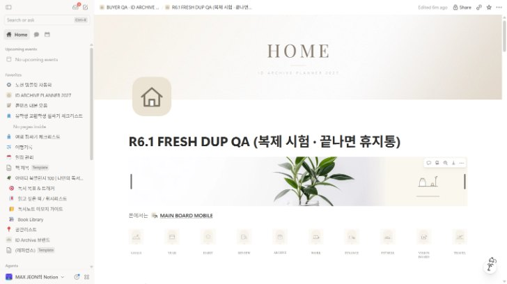
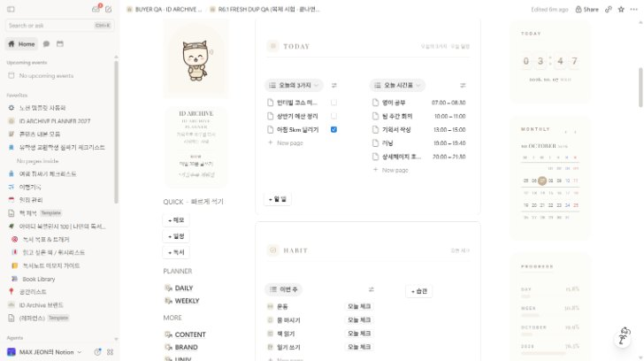
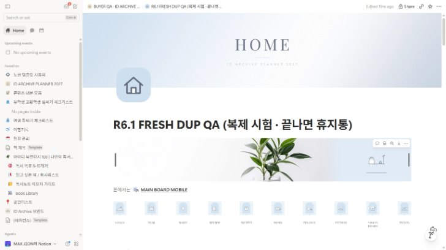
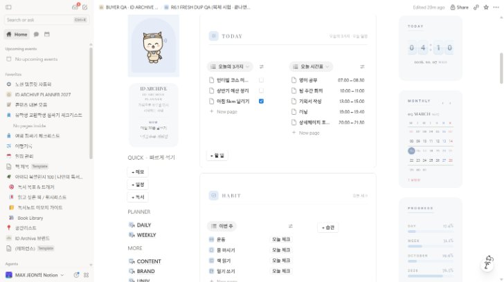
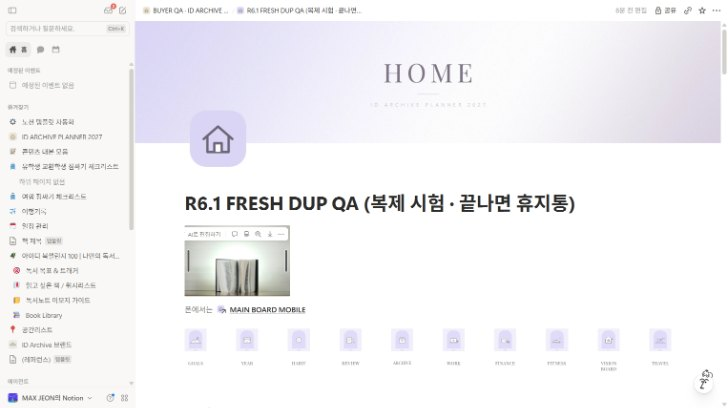
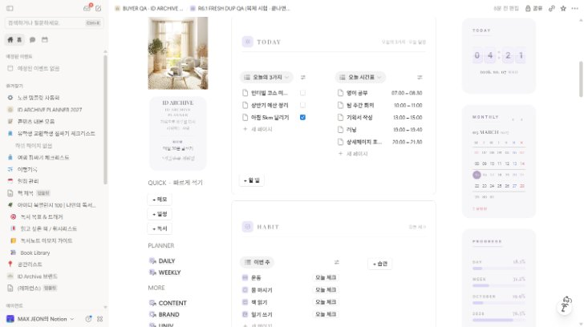
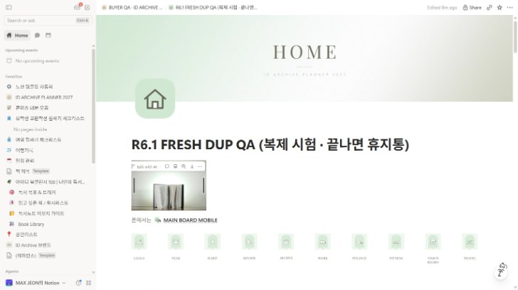
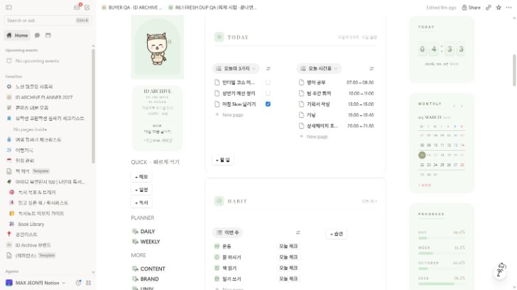
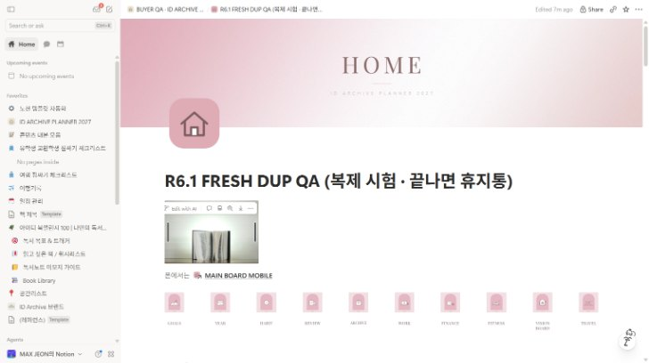
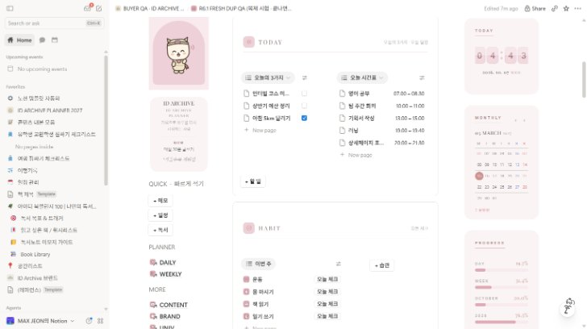
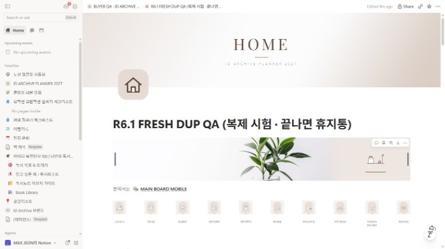
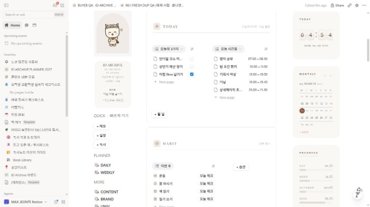
목띠(진한 외곽선 띠) 때문에 머리만 붙인 것처럼 보이던 것 → 몸이 머리 아래로 이어지고, 테마 색은 턱 밑 작은 매듭에만. 팔은 조금 짧게. 몸은 제 색 그대로. R4 후보는 이력으로 그대로 둠. 배치는 HOME 프로필 기본 · HABIT(응원) · REVIEW(완료) 세 곳만.
노션 폰 화면은 칸을 세로로 쌓아요 — HOME 의 한 줄 메뉴는 폰에서 세로로 길어져요(그림 104px · 칸마다 약 245px). 노션 그림으로는 옆으로 넘기는 메뉴가 안 돼서, 폰 첫 화면 MAIN BOARD MOBILE 맨 위에 옆으로 넘기는 한 줄 메뉴(노션 표 · 페이지 링크 · 복제해도 새 페이지로)를 넣었어요. 375 · 390 · 430 옆 넘침 0(HOME · MAIN BOARD MOBILE · HABIT · DAILY).
R6 DEMO = OWNER REVIEW READY. 아래는 실제 노션 화면(사이드바 열림). 기술 QA 표는 맨 아래로 옮겼습니다.
1526 × 854 첫 화면: 머리(아이콘 · 제목) ~368 · 사진 띠 384–547 · 「폰에서는 …」 547–587 · 메뉴 587 시작(1줄 그림 607–723 · 이름표 739–839). 메뉴 2줄째와 TODAY 는 첫 화면 아래 — TODAY(첫 대시보드 모듈)는 1119px 에서 시작, 첫 화면보다 265px 아래. 메뉴 높이는 고치지 않았습니다(오너 판단용).
왼쪽 0.19 · 가운데 0.60 · 오른쪽 0.21 (1440 에서 가운데 목록이 잘리지 않게 가운데를 넓힘). TODAY 두 목록 · HABIT(「오늘 체크」 — 주간 달성률 고리는 HOME 에서 숨기고 HABIT 페이지에 그대로) · GOAL / FOCUS.

양옆 위젯(프로필 이름 · 시계 숫자 · 달력 날짜 · 진행률 숫자)은 좁은 칸 규칙으로 잘리지 않게 고쳤습니다. 가운데 목록은 노션 목록 구조(아이콘 39px + 제목 최소 80px + 속성)라 1280(사이드바 열림)에서는 TODAY 체크 칸 · 끝 시각 · GOAL 고리가 가려집니다 — 구조를 바꾸지 않고는 해결되지 않아 FAIL(부분). 화면을 더 넓게 보고 싶을 때 사이드바를 접는 방법은 가이드북 선택 TIP.
잘림 0. 파란 「새로 만들기」는 첫 화면 0 · 아래 카드 안 3개(오늘 시간표 · HABIT · GOAL) — 노션 동작(목록 폭 약 308px 이상이면 보임), PLATFORM LIMITATION 으로 기록.


🎬 DEMO 에만 반영 · 🛒 판매본 그대로(승인 전 옮기지 않음). 모든 화면은 서버 반영 뒤 다시 불러온 실제 노션 화면(1526px = 오너 화면 폭, 폰은 375 · 390 · 430).
첫 화면(1526 × 854): 제목 · 사진 띠 · 「폰에서는 MAIN BOARD MOBILE」 · 메뉴 첫 줄까지. 메뉴는 두 줄을 한 칸에 위아래로 쌓아(칸마다 그림 두 장) 줄 사이가 R5 보다 24px 줄었습니다(줄 간격 272 → 248px, 그림 사이 세로 94 → 70px · 가로 62px). 가운데 정렬 0px 그대로.


위 줄 GOALS · YEAR · HABIT · WORK · ARCHIVE / 아래 줄 VISION BOARD · REVIEW · FITNESS · FINANCE · TRAVEL — 위아래가 짝(꿈↔목표, 해↔돌아보기, 습관↔운동, 일↔돈, 기록↔여행). 폰에서는 칸 순서대로 GOALS → VISION BOARD → YEAR → REVIEW … 로 짝끼리 이어집니다. 그림 154 × 116 · 이름표와 16px · 칸 폭 170.

기본은 그대로 「그림 ⋯ → 바꾸기 → 내 사진」. 가로 사진(4:3 · 3:2)은 칸에 꽉, 정사각은 칸의 약 75%, 세로(3:4 · 2:3)는 약 50~56% 폭으로 왼쪽에 붙습니다(노션 그림 블록은 자르기가 없음). 안내: 「메뉴 사진은 가로형 4:3 또는 3:2 권장」. 세로 · 정사각 사진을 쓰고 싶을 때만 선택 도구 MENU PHOTO 4:3(사진은 기기 밖으로 나가지 않음)로 잘라 올리면 아래처럼 모두 꽉 찹니다. 기본 그림으로 되돌리기: Theme Studio 「HOME 메뉴 사진 모두 기본 그림으로」 버튼(연결된 플래너), 또는 그 사진 설명에 「기본」 — 가이드북 TIP 에 둘 다 적어 둠.


HABIT 목록을 좁은 칸(304px)에 두고 「+ 습관」을 옆으로 — 노션은 목록이 약 308px 보다 좁으면 파란 버튼을 숨깁니다. 좁은 칸에서 일곱 점이 잘려 「주간 달성률」 고리로 바꿈(목표 목록과 같은 모양). 습관 체크는 줄의 「오늘 체크」 그대로. CURRENT GOAL · FOCUS 반칸 제목이 「CURRENT GO」로 잘리던 것 → 좁은 칸에서는 요약을 숨기고 자간을 줄임. 오른쪽 열이 가장 길어 D-DAY 를 「HOME 추가 모듈」로, VISION 핀을 6장 두 줄로 — 세 열 끝 차이 267 → 약 60px.


| 항목 | 판정 | R6 |
|---|---|---|
| FIRST VIEWPORT | KEEP | 제목 · 사진 띠 · 메뉴 첫 줄. 대시보드는 갤러리 때도 첫 화면 밖 — 메뉴 24px 압축 |
| L / C / R BALANCE | FIX → KEEP | 열 끝 2452 · 2345 · 2612 → 차이 약 60px (D-DAY 이동 · VISION 핀 6장) |
| MENU SCALE | FIX → KEEP | 줄 간격 272 → 248 · 세로 틈 94 → 70 (가로 62) · 가운데 0px |
| VISUAL ANCHOR | KEEP | 밝은 플립 시계(최신 화면에서 확인) · 사진 띠 |
| WHITE SPACE | KEEP | 메뉴 아래 · 열 사이 56px |
| CARD RHYTHM | KEEP | 큰 TODAY → HABIT → 반반 GOAL · FOCUS |
| TYPOGRAPHY | FIX | 좁은 반칸 제목 잘림 → 요약 숨김 · 자간 줄임 · 아주 좁으면 아이콘 숨김 |
| PHOTO DISTRIBUTION | KEEP | 위 띠 · 메뉴 · 왼쪽 MOOD · 오른쪽 VISION |
| RIGHT WIDGET WEIGHT | FIX | 시계 · 달력 · 진행률 · VISION — D-DAY 는 추가 모듈로 |
| CENTER DENSITY | KEEP | HABIT 안내 한 줄은 목록 아래로 |
| ALIGNMENT | KEEP | 메뉴 그림 = 이름 = 칸 가운데 |
| PREMIUM IMPRESSION | WEAK → FIX | 1526px 에서 파란 버튼 0. 화면이 아주 넓으면(약 1700px 이상) HABIT 목록이 넓어져 버튼이 다시 보일 수 있음 — 노션 동작(기록) |
위계: ① 핀 보드(내가 바라는 장면) | 목표 진행률 + DREAM PROCESS 3단계(장면 → 1 · 5 · 10년 목표 카드 → 할 일 · 습관으로 진행률) ② LIFE AREAS ③ 1 · 5 · 10 YEAR 하나의 갤러리(기간으로 묶음 — 「↗ GOALS」 제목과 파란 버튼 세 번 반복을 하나로). 핀 사진 바꾸기는 보드 위 ⚙ → 사진 고르기, 목표 카드 사진은 카드 표지(커버).
순서: TODAY 운동 · THIS WEEK 움직임 · ACTIVITY DAYS → 건강 목표 → WORKOUT LOG · MONTHLY. 고친 것: ACTIVITY DAYS 달력이 셋째 주에서 잘리던 것(넓은 칸에서 칸이 상자보다 커짐) → 칸 높이를 상자에 맞춰 한 달 전체가 보이게. 운동 기록 표의 빈 열(실제 시간대 · 실제(시간)) 숨김 → 제목 · 날짜 · 완료. 따로 적는 운동 표 없음 — 습관 「운동」 · 할 일 영역 「건강」 · 목표를 그대로 씀.
TODAY(DAILY) · HABIT · WORK · FINANCE · UNIV · ARCHIVE 와 HOME 을 375 · 390 · 430 에서 다시 확인 — 옆 넘침 0. 폰에서 데스크톱 쪽은 왼쪽 안내 칸이 먼저 오고, 맨 위 「폰에서는 … MOBILE」 이 폰용 쪽으로 이어집니다(MOBILE 쪽은 첫 화면에 바로 할 일 · 적기 버튼). 실제 폰 확인은 오너 최종 확인으로 남김.


DEMO 전체를 새로 복제(9,168 블록)한 뒤 복제본 안의 모든 블록 · 표 · 보기 · 템플릿 · 줄 · 버튼 동작(블록 버튼 33개 · 표 버튼 속성 2개)을 서버에서 읽어 「안의 id 가 복제본 밖을 가리키는지」 검사. 실제 클릭: 복제본 GOALS 위 줄 YEAR → 복제본 YEAR. 검사 뒤 복제본은 휴지통(영구 삭제 아님). 판매본 마지막 수정 10-02 그대로.
| 종류 | 결과 | 내용 |
|---|---|---|
| 그림 메뉴 링크 | 10 / 10 | DUPLICATION-SAFE INTERNAL — 복제본 페이지 |
| 글 링크(상대 · 「이 페이지」 위치 포함) | 296 | 모두 복제본 안. 노션 절대 주소 링크 0 |
| 페이지 언급 · 관계 값 | 3,492 | 모두 복제본 안 |
| 보기 · 표 · 템플릿 · 버튼 동작 | 1,149 · 38 · 22 · 59 | 모두 복제본의 표를 가리킴 |
| 외부 주소 | 1,193 | EXTERNAL INTENTIONAL — 위젯 · 사진 · 방문지 안내(visitkorea) |
| 숨은 예전 값 | 53 | BACKUP-LEGACY — MONTHS 12줄의 지워진 속성 「~DnO」(표에 없는 열 · 화면 · 링크로 보이지 않음)가 _BACKUP WEEKLY 를 가리킴. 증거 기록, 손대지 않음 |
| 지워진 줄의 정렬 흔적 | 3 | 보기 정렬 목록에 남은 휴지통 줄 id — 보이지 않음 |

CUSTOM 맨 위에 세 역할을 한 줄씩(각 줄은 복제해도 따라가는 링크). D-DAY 도 「HOME 추가 모듈」로. 날씨 · 음악은 라이브러리에 있어 HOME 사본은 두지 않음. 「위젯 52가지」 → 56가지로 맞춤. 함께 고친 숨은 결함: 노션 임베드 11개가 「보이는 주소」와 「정본 주소」가 달라 다음 테마 적용 때 되돌아갈 수 있었음(MAIN BOARD MOBILE 시계 모양 · HOME 제목 아이콘 등) → 정본을 보이는 주소로 바꿔 새 블록으로, 다시 검사 0.

다섯 폭(1280 · 1440 · 1526 · 1728 · 1920) 실측. 첫 화면(제목 · 띠 · 메뉴)의 파란 「새로 만들기」는 다섯 폭 모두 0 — 대시보드는 모든 폭에서 첫 화면 아래에서 시작합니다. 아래쪽은 1526 까지 0, 1728 에서 2개(오늘 시간표 · HABIT), 1920 에서 3개(+ GOAL) — 1440 에서 목록 내용이 잘리지 않게 가운데 칸을 넓힌 결과(OWNER REVIEW 정리). 원인(실측): 노션은 목록 폭이 약 308px 보다 좁을 때만 그 버튼을 숨기는데, 노션 칸은 창 폭에 비례 — 1920 에서 숨기려면 1280 에서 목록이 잘립니다(HABIT 은 이름 + 「오늘 체크」 + 고리에 약 300px 필요). 버튼을 숨기는 노션 설정은 없어 PLATFORM LIMITATION 으로 기록하고, 기능은 그대로 두었습니다. GOAL 은 0.5 로 1920 까지 숨김.
이번에 고친 넓은 · 좁은 화면 약점: 1920 VISION 핀(세 번째 줄 잘림 → 상자에 맞게 6장) · 1280 메뉴 이름표 「ISION BOAR」 잘림 → 줄인 글자 · 1280 달력 날짜 붙음 · 제목 두 줄 → 한 줄. 1280(사이드바 열림)은 칸이 좁아 목록 일부가 잘리는 「컴팩트」 — 사이드바를 접으면 1526 과 같은 폭(가이드북 FAQ 에 Ctrl / ⌘ + \).
| 폭 | 파란 버튼 (첫 화면 / 아래) | 세 열 · 메뉴 그림 |
|---|---|---|
| 1280 | 0 / 0 | 133 · 419 · 147 · 105×79 — 양옆 위젯 잘림 고침 · 가운데 목록 속성 잘림(FAIL 부분) |
| 1440 | 0 / 0 | 163 · 515 · 180 · 137×103 — 잘림 0 |
| 1526 | 0 / 0 | 180 · 567 · 198 · 154×116 — 기준 · 잘림 0 |
| 1728 | 0 / 2 | 218 · 688 · 241 · 195×146 — 잘림 0 |
| 1920 | 0 / 3 | 254 · 803 · 281 · 233×175 — 잘림 0 |
| 게이트 | 상태 | 근거 |
|---|---|---|
| LATEST RENDER VERIFIED | PASS | 서버 반영 뒤 새로 불러온 화면만 사용(반영 지연 30~60초 · 오래된 화면은 버림) |
| HOME R6 VISUAL | 오너 확인 | R6·1 · R6·4 · R6·5 |
| CENTERED MENU VISUAL | PASS | 0px · 줄 간격 압축 · 폰 순서 |
| VISION · FITNESS | PASS (DEMO) | R6·6 · R6·7 |
| REMAINING MOBILE | AUTOMATED MOBILE VIEWPORT PASS | R6·9 (실제 폰은 오너 최종) |
| FULL ABSOLUTE-LINK AUDIT | PASS | 노션 절대 링크 0 · 숨은 예전 값 53 기록 |
| FRESH DUPLICATE | PASS | R6·10 |
| WIDE DESKTOP | 첫 화면 PASS · 아래 PLATFORM LIMITATION | R6·13 (1728 에서 2 · 1920 에서 3, 모두 첫 화면 아래) |
| EMBED 정본 검사 | PASS (221 · 0) | 릴리스 QA 자동 검사 추가 |
| CONTENT CLIPPING | 1440 · 1526 · 1728 · 1920 PASS / 1280 FAIL(부분) | 가운데 목록 속성(TODAY 체크 · 끝 시각 · GOAL 고리) — 구조를 바꿔야 해결 |
| OWNER VISUAL REVIEW | 대기(R6 DEMO = OWNER REVIEW READY) | 승인 전 판매본으로 옮기지 않음 · 승격 계획 docs/R6_SALE_MIGRATION.md |
🎬 DEMO 에만 반영 · 🛒 판매본 그대로(승인 전 옮기지 않음). 아래 R2 화면은 그 전 기록입니다.
A(갤러리)는 이름이 왼쪽에 붙고 「+ 새 페이지」 · 파란 「새로 만들기」가 늘 보였습니다. C는 노션 그림 블록(누르면 그 페이지로 · 복제해도 새 페이지를 따라감) + 가운데 이름표. 10칸 모두 칸 가운데와 0px 차이(데스크톱), 폰 375 · 390 · 430 에서도 0px. 아래 확대: A 는 이름이 칸 가운데보다 70px 왼쪽, C 는 0.5px.


사진 바꾸기: 그림에 마우스 → ⋯ → 「바꾸기」 → 내 사진. 이름 · 누르면 가는 곳 · 가운데 · 칸 크기 그대로. 칸은 4:3 — 가로 사진(폰 가로 4:3 · 3:2 · 16:9)은 꽉 차고 가운데. 세로 사진은 노션 그림 블록이 자르기를 못 해서 칸보다 좁게 · 왼쪽으로 보입니다(FINANCE 칸이 세로 사진 예). 기본 그림으로 되돌리기: 그 사진 설명에 「기본」을 적고 테마 적용 → 지금 테마의 그 칸 그림으로(BUYER QA 실제 시험 통과).


왼쪽 흰 안내 칸을 빼고, 맨 위를 「오늘 운동 · 이번 주 움직임 · ACTIVITY DAYS(운동한 날 달력)」 한 줄로. 그 아래 건강 목표 진행률, 운동 기록 · 한 달씩.


페이지 전체 폭. 큰 핀 무드보드(6장 · 삶의 영역별 한 장, 카드 없이 벽에 꽂힌 모양) + 목표 진행률, 그 아래 LIFE AREAS 사진 카드 띠, 1 · 5 · 10년 목표(예시 목표의 잎 그림 표지 → 뜻에 맞는 CC0 사진).


HOME 오른쪽 위 시계는 같은 플립 모양의 밝은 버전으로 바꿨습니다(노션 쪽 반영 완료 — 화면 캡처는 다음 확인 때 함께).
TODAY · HABIT · WORK · FINANCE · UNIV · ARCHIVE 모두 옆 넘침 없음. 고친 것: FINANCE 「남은 예산」 숫자가 375 · 390 에서 잘려 「2414」처럼 보이던 것(실제 241,400) → 칸 폭을 맞춰 끝까지 보임 · 옆 칸 금액 조각(「₩40」)이 안 보이게. 한글 모듈 제목 자간(「작 은 습 관」 → 「작은 습관」). GOALS 실천 보드 · 목표 보드 · 프로젝트는 칸을 좁혀 375 에서 다음 칸이 살짝 보이게(옆으로 밀 수 있다는 표시).


| 항목 | 판정 | R5 |
|---|---|---|
| 첫 화면 | KEEP | 제목 · 사진 띠 · 메뉴 첫 줄. 메뉴가 갤러리보다 약 190px 높아 TODAY 가 조금 아래로 |
| L · C · R 위계 | KEEP | 왼쪽 나 · 빠르게 적기 · 길잡이 / 가운데 TODAY · HABIT · 목표 · 포커스 / 오른쪽 시계 · 달력 · D-day · 진행률 · VISION |
| 시선 중심 | FIX | 짙은 차콜 플립 시계가 페이지에서 가장 어두운 덩어리 → 같은 플립 모양의 밝은 버전(테마 옅은 면 · 진한 숫자) |
| 빈 공간 · 열 끝 | KEEP | 세 열 끝 높이 차 30px 안쪽 |
| 카드 밀도 | KEEP | TODAY 두 목록 + 버튼 |
| 사진 배치 | KEEP | 위(띠) · 왼쪽 아래(MOOD) · 오른쪽 아래(VISION) |
| 모듈 리듬 | KEEP | 큰 TODAY → 가로 HABIT → 반반 GOAL · FOCUS |
| 오른쪽 무게 | WEAK→FIX | 시계 밝게(위) |
| 메뉴 크기 | WEAK | 노션 임베드 최소 높이 100px 때문에 이름표 칸이 큼 — 아래 여백이 줄 사이 숨 고르기가 되도록 이름을 위로 |
| 글자 | FIX | 한글 제목 자간 |
| 정렬 | KEEP | 세 열 사이 56 · 57px · 메뉴 0px |
| 고급스러움 | WEAK | DB 목록의 파란 「새로 만들기」가 화면에서 가장 센 색 — 노션 기본 버튼이라 숨길 수 없음(플랫폼 한계 · 기록) |
큰 달력(이번 달 일정) · 읽는 중(BOOKS) → 다시 쓸 수 있는 모듈: CUSTOM 페이지 맨 아래 「HOME 추가 모듈」로 옮김(끌어서 HOME 에 다시 놓으면 됨). 날씨 · 음악 → 같은 위젯이 이미 WIDGET LIBRARY 「오늘」 · 「도구」에 있어 HOME 사본만 정리. 예전 갤러리 메뉴(MENU 표 보기)도 지우지 않고 「HOME 추가 모듈」에.

복제본 안의 그림 메뉴 링크 10개 · 페이지 언급 566개 · 글 링크 145개가 모두 복제본 페이지를 가리킵니다. 찾아서 고친 것: MONTHLY · WEEKLY · DAILY · UNIV 「이 페이지」 바로가기 29개가 주소 전체를 적은 링크라 복제본에서도 원본을 가리키고 있었음 → 29개 모두 복제해도 따라오는 링크로 바꿈(작은 페이지 복제로 페이지 · 위치 모두 따라오는 것 확인). 판매본으로 옮길 때 같은 방식.
맨 위 페이지 사진 띠 → 메뉴 → 세 구역. 가운데는 DB 목록이 아니라 모듈 카드(작은 선 아이콘 · 제목 · 한 줄 요약 · 내용 · 그 일의 버튼). 세 열의 끝 높이를 맞췄습니다.

LEFT = 프로필 · 빠른 버튼 3개 · 짧은 길잡이(메뉴 카드와 겹치는 링크 없음) · 밝은 MOOD 사진. CENTER = TODAY → HABIT → CURRENT GOAL · CURRENT FOCUS(각 모듈 안에 「+ 할 일 · + 습관 · + 목표」). RIGHT = 시계 · 미니 달력 · D-day · 진행률 · VISION — 큰 달 달력 · 날씨 · 음악 · 읽는 중은 HOME 에서 빼고 각 페이지로(휴지통 보관).


실측(1568px 창): 9장 모두 그림 가운데 = 카드 가운데(차이 0px), 이름 기준선 같은 높이(156px), 카드 273 × 186 동일. 이름은 노션 갤러리가 가운데 정렬을 못 해 왼쪽 같은 여백 — 우리 위젯 메뉴로 바꾸면 가운데가 되지만 「사진 눌러 바꾸기」와 노션 안 이동이 깨져서 노션 갤러리를 유지했습니다. 끝의 「+ 새 페이지」 칸도 노션이 숨기지 못하는 칸입니다.

큰 면 = 흰색 · 아주 옅은 아이보리, 카드 = 거의 흰색, 테마 색은 아이콘 칩 · 오늘 날짜 · 띠의 포인트 선만. 왼쪽 MOOD 의 진한 모래색 사진을 밝은 책상 사진으로 바꿨습니다.

같은 시험 페이지를 테마만 바꿔 찍었습니다. 사진은 그대로, 면 · 포인트 · 메뉴 그림만 그 색. 구매자 사진(작은 침대 사진 · TRAVEL)은 그대로.
포인트 = 고른 HEX 그대로(오늘 날짜 · 주간 칩 · 띠의 선 · 메뉴 그림 아치 밑 선) · 큰 면 = 그 HEX 에서 만든 아주 옅은 색 · 노션 블록 바탕만 가장 가까운 노션 색.

구매자 사진은 어떤 색에서도 그대로(사진 · 이름 · 누르면 가는 곳). 지우면 「지금 테마」의 기본 그림으로 — Custom → 파랑 → 아이보리 순서로 확인.

달력 카드는 큰 흰 면(회색 상자 아님) · 제목만 테마 색. 아래 부분은 HOME 과 같은 모듈 카드로 나눴습니다(THIS MONTH · 이 달의 목표 · 프로젝트 · 중요한 날 · 기록 · 돌아보기). 맨 위 큰 사진은 노션 AI 로 만든 업로드 파일(우리 자동화 아님)이라 그대로 두고, 겹치던 우리 띠는 MONTHLY 에서만 뺐습니다.


계획 리듬 사진 띠 · 이번 주 요일별 보드 카드(제목 한 번만) · 아래 섹션은 모듈 카드.

같은 모듈 카드 언어를 TODAY · HABIT · WORK · FINANCE · UNIV · ARCHIVE 에도 적용(섹션 18개 → 모듈 카드 39개, 각 페이지 「이 페이지」 목록은 모듈 링크). 지평선 사진 띠 · GOAL OVERVIEW 모듈 · 오른쪽은 목표 진행률 · D-day · FOCUS · VISION(핀 사진) · 로드맵. 왼쪽 「이 페이지」 목록은 각 모듈로 가는 링크.

오늘 디자인 변경 뒤 다시 검사: 폰 페이지 5개 + 데스크톱 HOME · GOALS · MONTHLY · WEEKLY 를 375 · 390 · 430 에서 — 가로로 넘치는 요소 0(옆으로 넘기는 보드 · 갤러리 안은 노션이 일부러 옆으로 넘김). 폰 페이지의 회색 소제목 막대 46개를 데스크톱과 같은 모듈 머리(아이콘 · 제목)로 바꿨습니다.